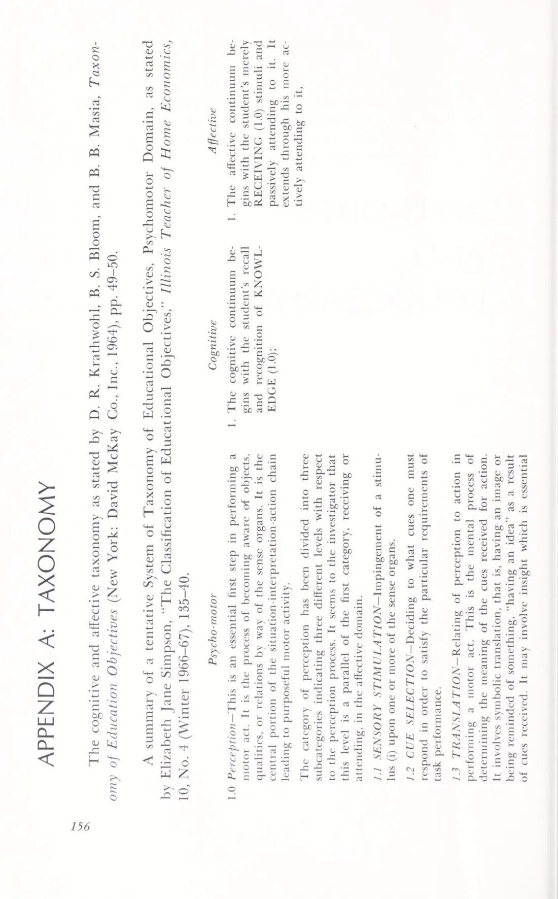

Phụ lục và Thư mục tài liệu tham khảo
Phụ lục A
(Trang 156–158 trong bản gốc: Nội dung dạng bảng/sơ đồ phân loại của Simpson không có văn bản OCR.)



Phụ lục B: Câu hỏi thảo luận
Câu hỏi thảo luận — Kiến thức nhận thức
Sau đây là các câu hỏi gợi ý cho thảo luận trên lớp, ôn tập hoặc kiểm tra. Chúng cũng có thể đóng vai trò là công cụ tự kiểm tra dành cho sinh viên.
- Những cơ chế nào tham gia vào việc thực hiện một hành động kỹ năng?
- Liệt kê các biến số ảnh hưởng đến hiệu suất (performance) và gây ra sự thay đổi tạm thời trong hành vi.
- Các nghiên cứu gần đây đã kết luận gì về giai đoạn bình nguyên của việc học (plateau of learning)?
- Giải thích sự chuyển giao học tập (transfer) theo quan điểm của các nhà lý thuyết học tập liên kết (associationist) và các nhà lý thuyết học tập nhận thức (cognitive).
- Phát hiện nghiên cứu cơ bản nào ủng hộ việc sử dụng bóng tennis màu đỏ thay cho bóng màu trắng?
- Khả năng sử dụng thông tin có sẵn của con người có luôn cải thiện hiệu suất không?
- Liệt kê các đặc điểm của một chương trình điều hành (executive program).
- Điều gì xảy ra khi một người trưởng thành học một kỹ năng mới?
- Thói quen (habits) là gì?
- Định nghĩa tri giác (perception), tri giác-vận động (perceptual-motor), cảm giác-vận động (sensory-motor).
- Đơn vị cấu trúc cơ bản hay đơn vị hành vi nền tảng theo lý thuyết liên kết, lý thuyết nhận thức và lý thuyết điều khiển học (cybernetics) là gì?
- Sự khác biệt giữa học tập cảm xúc (affective), học tập thực thi (effective) và học tập nhận thức (cognitive) là gì?
- Cho ví dụ về các nhiệm vụ giảm thông tin (information reducing), bảo toàn thông tin (conserving) và tạo thông tin (creation).
- Những biến số nào ảnh hưởng đến thời gian phản ứng (reaction time)? Thời gian vận động (movement time)?
- Sự chú ý (attention) là gì? Điều gì ảnh hưởng đến việc một người chú ý vào cái gì?
- Ghép các thuật ngữ sau đây với mô tả phù hợp nhất:
- a. Phản hồi tăng cường (Augmented feedback)
- b. Phản hồi củng cố (Reinforcing feedback)
- c. Phản hồi đồng thời (Concurrent feedback)
- d. Phản hồi điều chỉnh (phản hồi hành động) (Regulating feedback / action feedback)
- e. Phản hồi nội tại (Intrinsic feedback)
- f. Phản hồi kết thúc (Terminal feedback)
- g. Không thuộc các mục trên
- Thông tin vốn có trong nhiệm vụ và là kết quả từ chính hành động của một người.
- Thông tin đang diễn ra được cung cấp liên tục.
- Phản hồi dường như ảnh hưởng đến hiệu suất hơn là việc học.
- Phản hồi cảm thụ bản thể (proprioceptive feedback).
- Việc sử dụng hướng dẫn bằng tay (manual guidance).
- Sự thị phạm của người hướng dẫn.
- Điểm số trong một khóa học.
- Học thuyết ưu tiên đầu vào (doctrine of prior entry) là gì?
- Giải thích chuyển giao âm (negative transfer), chuyển giao dương (positive transfer), ức chế xuôi (proactive inhibition), ức chế ngược (retroactive inhibition).
- Thảo luận và giải thích các lý thuyết về lưu giữ (retention).
- Định nghĩa năng lực (ability).
- Giám sát điều hành (executive monitoring) và chia sẻ thời gian (time sharing) là gì?
- Các bảng phân loại (taxonomies) phục vụ những mục đích gì?
- Khái niệm tổ chức phân cấp (hierarchical organization) hàm ý điều gì?
- Định nghĩa hiện tượng hồi tưởng/tăng tiến sau nghỉ (reminiscence).
- Liệt kê những điểm quan trọng cần xem xét trong các giai đoạn khác nhau của quá trình học một kỹ năng.
Câu hỏi thảo luận — Kiến thức cảm xúc (Affective Knowledge)
- Theo bạn, khó khăn lớn nhất cần vượt qua trong lĩnh vực học kỹ năng trước khi giáo viên giáo dục thể chất có thể cải thiện phương pháp giảng dạy của họ là gì?
- Nhận thức của bạn về động lực học của việc tiếp nhận kỹ năng đã thay đổi (hoặc không thay đổi) như thế nào sau khi đọc cuốn sách này?
- Thảo luận về ý nghĩa của việc học một kỹ năng nếu bạn định nghĩa kỹ năng là việc hoàn thành một mục tiêu thay vì sự xuất sắc trong chuyển động.
- Thảo luận các mặt lợi và hại của nhận định sau: "Việc mô tả con người như một hệ thống xử lý thông tin hàm ý một quan điểm máy móc hơn là nhân văn."
Câu hỏi thảo luận — Ứng dụng
- Thiết kế và thực hiện một thí nghiệm về bất kỳ chủ đề nào sau đây:
- a. Các biến số ảnh hưởng đến thời gian phản ứng
- b. Các biến số ảnh hưởng đến thời gian vận động
- c. Phân bố luyện tập (distribution of practice)
- d. Sự lưu giữ (retention)
- e. Căng thẳng (stress)
- f. Thiếu hụt phản hồi (deprivation of feedback)
- Đọc đoạn mô tả sau đây do một người đang học cách thực hiện cú lên rổ bằng tay trái trong bóng rổ viết. Cô ấy thuận tay phải, ở độ tuổi đại học và có kỹ năng khá tốt. Sau đó trả lời các câu hỏi theo sau đoạn mô tả.
Giới thiệu: Về mặt kỹ thuật, tôi không phải là người mới bắt đầu học kỹ năng cụ thể này. Tôi đã chơi bóng rổ rất nhiều và đã thành thạo cú ném này bằng tay phải, cũng như đã từng thử bằng tay trái; do đó, kinh nghiệm trước đây đã ảnh hưởng đến việc học kỹ năng. Mặc dù buổi học ngắn, tôi cảm thấy động lực đã xuất hiện. Việc một người nam dạy một cô gái thực hiện cú ném khiến tôi muốn làm thật tốt để chứng tỏ rằng con gái cũng có thể học và chơi thể thao giỏi.
Buổi học thứ nhất: Trước tiên, giáo viên hướng dẫn tôi thực hiện vài cú ném bằng tay phải. Sau đó thầy thị phạm cú lên rổ bằng tay trái. Tiếp theo, không có bóng, thầy thị phạm bước tiếp cận bước-nhảy lò cò-bật lên (step-hop-elevate) và đưa ra chỉ dẫn bằng lời. Thầy lặp lại các từ khóa gợi ý "bước-lò cò-nhảy".
Sau khi tôi luyện tập động tác này không bóng, thầy thị phạm chuyển động cánh tay — không có gợi ý bằng lời nào được đưa ra. Trước khi tôi thử, thầy lại thị phạm toàn bộ cú lên rổ một lần nữa. Sau đó thầy bảo tôi cầm bóng và tập đẩy bóng thẳng lên. Thầy cho tôi giậm nhảy bằng một chân, đẩy bóng lên và chạm bảng rổ. Một lần nữa thầy lặp lại việc thị phạm.
Tôi tập thêm vài lần, với các gợi ý được đưa ra trong lúc thực hiện hoặc ngay sau đó. Chưa bao giờ có áp lực phải ném trúng rổ. Lời khen được đưa ra khi kỹ thuật của tôi tốt, bất kể cú ném vào hay trượt. Tôi cứ muốn dùng cả hai tay thay vì một tay như giáo viên mong muốn. Tiếp theo, chúng tôi thêm các bước chạy và dẫn bóng — lại thị phạm, chỉ dẫn bằng lời là bước chân trái, dẫn bóng tay phải, bước chân phải, ném. Quá trình luyện tập diễn ra.
Buổi học thứ hai: Chúng tôi bắt đầu bằng việc xác định một điểm trên bảng rổ nơi bóng có thể chạm vào và đi vào rổ. Chỉ dẫn bằng lời và thị phạm được giáo viên đưa ra. Tôi luyện tập và lại được nhắc về thói quen đặt tay kỳ cục trong kỹ thuật của mình. Tôi liên tục cố gắng thay đổi nó, nhưng cảm thấy gượng gạo.
Tôi tiếp tục luyện tập — thêm chạy, chuyền và dẫn bóng vào cú ném. Tôi đã ném vào một quả bằng tay trái, và giáo viên sửa lại vị trí đặt tay của tôi. Tôi thử ném lại để ghi điểm, nhưng không thành công. Buổi học kết thúc với lời nhắc của giáo viên về việc tự tập luyện tinh thần (mental practice) ở nhà.
- a. Kỹ năng này đã được dạy như một kỹ năng mở (open skill) hay kỹ năng đóng (closed skill)?
- b. Hãy nêu một ví dụ nơi chuyển giao âm (negative transfer) đã xảy ra.
- c. Hãy nêu một ví dụ nơi việc nhấn mạnh vào kỹ thuật có thể đã cản trở việc học.
- d. Bạn sẽ thay đổi điều gì trong Buổi học thứ nhất?
- e. Bạn sẽ thay đổi điều gì trong Buổi học thứ hai?
- Thiết kế một môi trường học tập dựa trên các năng lực và giới hạn về cảm giác, tri giác và vận động của con người mà bạn cảm thấy sẽ tăng cường việc học kỹ năng.
- Vẽ sơ đồ một mô hình mô tả cách một người học một mẫu chuyển động (movement pattern). Hãy nhớ rằng mô hình là một lời giải thích lý thuyết về cách một điều gì đó xảy ra. Áp dụng mô hình của bạn vào tình huống giảng dạy.
Thư mục tài liệu tham khảo
- ADAMS, J. A. Motor skills. Annual Review of Psychology, 15: 181–202, 1964.
- AMMONS, R. B. Effects of knowledge of performance: A survey and tentative theoretical formulation. Journal of General Psychology, 54: 279–99, 1956.
- ANDERSON, J. E. Growth and development today: Implications for physical education. Social Changes and Sports. Washington, D.C.: AAHPER, 1958.
- ANNETT, J. and H. KAY. Skilled performance. Occupational Psychology, 30: 112–17, 1956.
- ANNETT, J. and H. KAY. Knowledge of results and skilled performance. Occupational Psychology, 31: 69–79, 1957.
- ANNETT, J. Feedback and Human Behavior. Baltimore: Penguin Books, Inc., 1969.
- ARMSTRONG, T. R. Training for the production of memorized movement patterns. NASA Technical Report, No. 26, 1970.
- ATKINSON, J. W. The mainsprings of achievement-oriented activity. In J. D. Krumboltz (ed.), Learning and The Educational Process. Skokie, Ill.: Rand McNally Co., 1965.
- ATKINSON, J. and D. MCCLELLAND. Motivation and behavior. In George H. Litwin and Robert A. Stringer (eds.), Motivation and Organizational Climate. Cambridge, Mass.: Division of Research, Graduate School of Business Administration, Harvard University, 1968.
- BAHRICK, H. P., M. NOBLE, and P. M. FITTS. Extra task performance as a measure of learning a primary task. Journal of Experimental Psychology, 48: 298–302, 1954.
- BARTLETT, F. C. The measurement of human skill. Occupational Psychology, 22: 31–38, 1948.
- BARTLETT, F. C. Thinking: An Experimental and Social Study. New York: Basic Books, 1958.
- BERLIN, P. Effects of varied teaching emphases during early learning on acquisition of selected motor skills. Dissertation Abstracts, 20, No. 5, 1959.
- BERLIN, P. (ed.). A symposium of motor learning. Quest, monograph 6, 1966.
- BILODEAU, E. A. and I. McD. BILODEAU. Motor skills learning. Annual Review of Psychology, 12: 243–80, 1961.
- BILODEAU, INA McD. Information feedback. In E. A. Bilodeau (ed.), Acquisition of Skill. New York: Academic Press, Inc., 1966, pp. 255–96.
- BLOOM, B. S., M. D. ENGLEHART, E. J. FURST, W. H. HILL, and D. R. KRATHWOHL. Taxonomy of Educational Objectives: Handbook I: Cognitive Domain. New York: David McKay Co., Inc., 1956.
- BOURNE, L. E. Information feedback. Comments on Professor I. McD. Bilodeau's Paper in E. A. Bilodeau (ed.), Acquisition of Skill. New York: Academic Press, Inc., 1966.
- BRACKBILL, Y., W. E. BOBLITT, D. DAVLIN, and J. E. WAGNER. Amplitude of response and the delay-retention effect. Journal of Experimental Psychology, 66: 57–64, 1963.
- BRACKBILL, Y., R. B. ISAACA, and N. SMELKINSON. Delay of reinforcement and the retention of unfamiliar, meaningless material. Psychological Review, 11: 553–54, 1962.
- BRACKBILL, Y., J. E. WAGNER, and D. WILSON. Feedback delay and the teaching machine. Psychology in the Schools, 1: 148–56, 1964.
- BROER, M. Effectiveness of a general basic skills curriculum for junior high school girls. Research Quarterly, 379: 388, 1958.
- BRYAN, W. L. and N. HARTER. Studies on the telegraphic language: The acquisition of a hierarchy of habits. Psychological Review, 6: 345–75, 1899.
- BRYDEN, M. P. A model for the sequential organization of behavior. Canadian Journal Psychological Review, 21: 37–55, 1967.
- CHERNIKOFF, R. and F. V. TAYLOR. Reaction time kinesthetic stimulation resulting from sudden arm displacements. Journal of Experimental Psychology, 43: 1–8, 1952.
- COADY, C. The effect of refined principles of kinesthesis in teaching golf skills to college women. Master's Thesis, Indiana University, Bloomington, Indiana, 1950.
- COLVILLE, F. M. The learning of motor skills as influenced by knowledge of mechanical principles. Journal of Education Psychology, 48: 321–27, 1957.
- COMBS, A. W. and D. SNYGG. Individual Behavior. New York: Harper & Row, Publishers, 1959.
- COX, J. W. Some experiments on formal training in the acquisition of skills. British Journal of Psychology, 24: 67–87, 1933.
- CRATTY, B. J. Movement Behavior and Motor Learning. Philadelphia: Lea & Febiger, 1964.
- CREAMER, L. R. Event uncertainty, psychological refractory period, and human data processing. Journal of Experimental Psychology, 66: 187–94, 1963.
- CROSSMAN, E. R. F. W. A theory of the acquisition of speed-skill. Ergonomics, 2: 153–66, 1959.
- DAVIS, F. Brain training. Glamour, Oct., 1970, pp. 170+.
- DAVIS, R. The human operation as a single channel information system. Quarterly Journal of Experimental Psychology, 9: 119–29, 1957.
- DIEHL, J. and R. SEIBEL. The relative importance of visual and auditory feedback in speed typewriting. Journal of Applied Psychology, 46: 365–69, 1962.
- DRAZIN, D. H. Effects of foreperiod, foreperiod variability, and probability of stimulus occurrence on simple reaction time. Journal of Experimental Psychology, 62: 43–50, 1961.
- FITTS, P. M. Engineering psychology and equipment design. In S. S. Stevens (ed.), Handbook of Experimental Psychology. New York: John Wiley & Sons, Inc., 1951, pp. 1237–1340.
- FITTS, P. M. The information capacity of the human motor system in controlling the amplitude of movement. Journal of Experimental Psychology, 47: 381–91, 1954.
- FITTS, P. M. Perceptual-motor skill learning. In A. W. Melton (ed.), Categories of Human Learning. New York: Academic Press, Inc., 1964, pp. 243–85.
- FITTS, P. M. Factors in complex skill training. In Robert Glaser (ed.), Training Research and Education. New York: John Wiley & Sons, Inc., 1965, pp. 177–97.
- FITTS, P. M. Cognitive aspects of information processing: III. Set for speed versus accuracy. Journal of Experimental Psychology, 71: 849–57, 1966.
- FITTS, P. M. and M. POSNER. Human Performance. Belmont, Calif.: Brooks Cole Publishing Co., 1967.
- FOX, P. W. and C. M. LEVY. Acquisition of a simple motor response as influenced by the presence or absence of action visual feedback. Journal of Motor Behavior, 1: 169–80, 1969.
- FLEISHMAN, E. A. and W. E. HEMPEL, JR. The relation between abilities and improvement with practice in a visual discrimination reaction task. Journal of Experimental Psychology, 49: 301–12, 1955.
- FLEISHMAN, E. A. Comments on human abilities. In E. A. Bilodeau (ed.), Acquisition of Skill. New York: Academic Press, Inc., 1966.
- FLEISHMAN, E. A. and J. F. PARKER. Use of analytical information concerning task requirements to increase the effectiveness of skill training. Journal of Applied Psychology, 45: 295–302, 1961.
- GAGNE, R. M. and E. A. FLEISHMAN. Psychology and Human Performance. New York: Holt, Rinehart & Winston, 1959, pp. 219–62.
- GIBBS, G. B. A continuous regulation of skilled responses by kinesthetic feedback. British Journal of Psychology, 45: 24–39, 1954.
- GILMAN, D. A. Feedback prompting and overt correction procedures in non-branching computer assisted instruction programs. Journal of Educational Research, 60: 423–26, 1967.
- GRIFFITH, C. F. An experiment in learning to drive a golf ball. Athletic Journal, 11: 11, 1931.
- HARTSON, L. D. Contrasting approaches to the analysis of skilled movements. Journal of General Psychology, 20: 263–93, 1939.
- HELLEBRANDT, F. A. The physiology of motor learning. Cerebral Palsy Review, July–August, 1958.
- IRION, A. L. A brief history of research on the acquisition of skill. In E. A. Bilodeau (ed.), Acquisition of Skill. New York: Academic Press, Inc., 1966.
- JEWETT, A., S. JONES, S. LUNEKE, and S. ROBINSON. Educational Change Through a Taxonomy for Writing Physical Education Objectives. Quest, 15, January 1971.
- JUDD, C. H. Practice without knowledge of results. Psychology Research Monograph Supplement, 7: 185–99, 1905.
- JUDD, J. H. The Relation of Special Training to General Intelligence. Education Review, 36: 28–42, 1908.
- KAMIYA, J. Conscious control of brain waves. Psychology Today, April, 1968.
- KIENTZLE, M. J. Properties of learning curves under varied distributions of practice. Journal of Experimental Psychology, 36: 187–211, 1946.
- KNAPP, B. Skill in Sport, The Attainment of Proficiency. London: Routledge & Kegan Paul Ltd., 1963.
- KRATHWOHL, D. R., B. S. BLOOM, and B. B. MASIA. Taxonomy of Educational Objectives: Handbook II: Affective Domain. New York: David McKay Co., Inc., 1964.
- LANG, P. Autonomic control or learning to play the internal organs. Psychology Today, pp. 37+, October 1970.
- LASHLEY, K. S. The problem of serial order in behavior. In Lloyd A. Jeffress (ed.), Cerebral Mechanisms in Behavior, The Hixon Symposium. New York: John Wiley & Sons, Inc., 1951.
- LASHLEY, K. S. and J. BALL. Spinal conduction and kinesthetic sensitivity in the maze habit. Journal of Comparative Psychology, 71: 105, 1929.
- LEIBOWITZ, H. Visual Perception. New York: The Macmillan Company, 1965.
- LEONARD, G. Education and Ecstasy. New York: Delacorte Press, 1968.
- LINCOLN, R. A. Learning a rate of movement. Journal of Experimental Psychology, 47: 465–70, 1954.
- MASLOW, A. H. Motivation and Personality. New York: Harper & Row, Publishers, 1954.
- MCGRATH, J. W. The relative importance of kinesthetic and visual cues in learning hand-eye coordination skills. Master's Thesis, University of California, Berkeley, California, 1947.
- MELTON, A. W. Implications for a General Theory of Memory. Journal of Verbal Learning and Verbal Behavior, 2: 1–21, 1963.
- MELTON, A. W. (ed.). Categories of Human Learning. New York: Academic Press, Inc., 1964.
- METHENY, E. Movement and Meaning. New York: McGraw-Hill Book Company, 1968.
- MILLER, G. A. The magical number seven, plus or minus two: Some limits on our capacity for processing information. Psychological Review, 63: 81–97, 1956.
- MILLER, G. A., E. GALANTER, and K. PRIBRAM. Plans and the Structure of Behavior. New York: Holt, Rinehart & Winston, Inc., 1960.
- MILLER, R. B. Handbook on Training and Equipment Design. USAF, WADC, Technical Report, No. 53-136, 1953.
- MOWRER, O. H. Learning Theory and the Symbolic Process. New York: John Wiley & Sons, Inc., 1960.
- MUMBY, H. Kinesthetic acuity and balance related to wrestling ability. Research Quarterly, 24: 327–34, 1953.
- NAYLOR, J. C. and G. E. BRIGGS. Long-term retention of learned skills: A review of the literature. ASD Technical Report 61–390, The Ohio State University, 1961.
- NEWELL, A., J. C. SHAW, and H. A. SIMON. Elements of a theory of human problem solving. Psychological Review, 65: 151–66, 1958.
- PHILLIPS, M. and D. SUMMERS. Relation of kinesthetic perception to motor learning. Research Quarterly, 25: 456–69, 1954.
- POSNER, M. I. Information reduction in the analysis of sequential tasks. Psychological Review, 71, 1964.
- POULTON, E. C. Perceptual anticipation in tracking with two-pointed and one-pointed displays. British Journal of Psychology, 43: 222–29, 1952.
- POULTON, E. C. On prediction of skilled movements. Psychological Bulletin, 54: 467–78, 1957.
- PURDY, B. J. and A. LOCKHART. Retention and relearning of gross motor skills after long periods of no practice. Research Quarterly, 33: 265–72, 1962.
- ROGERS, C. and B. F. SKINNER. Some issues concerning the control of human behavior. Science, 124, No. 3231: 1057–66, Nov. 30, 1956.
- ROLOFF, L. Kinesthesis in relation of learning in the selected motor skills. Research Quarterly, 24: 210–17, 1953.
- ROBB, M. Feedback and skill learning. Research Quarterly, 39: 175–84, 1968.
- ROBB, M. and R. PEW. Skill training for the production of a memorized movement pattern. NASA Contractor Report, 1251, 1968.
- ROBB, M. and J. TEEPLE. Video tape and skill learning: An exploratory study. Educational Technology, 10: 79–82, Nov. 1969.
- SASSENRATH, J. M. and C. M. GAVERICK. Effects of differential feedback from examinations on retention and transfer. Journal of Educational Psychology, 56: 259–63, 1964.
- SCOTT, M. G. Measurement of kinesthesis. Research Quarterly, 26: 324–41, 1955.
- SEASHORE, H. and A. BAVELAS. The functioning of knowledge of results in Thorndike's line-drawing experiment. Psychological Review, 48: 155–64, 1941.
- SIMPSON, E. J. The classification of education objectives. Illinois Teacher of Home Economics, 10: 135–40, Winter, 1966–67.
- SINGER, R. Motor Learning and Human Performance. New York: The Macmillan Company, 1968.
- SLATER-HAMMEL, A. Measurement of kinesthetic perception of muscular force with muscle potential changes. Research Quarterly, 28: 153–59, 1957.
- SMITH, K. U., S. D. ANSELL, J. KOEHLER, and G. H. SERVOS. Digital computer system for dynamic analysis of speech and feedback mechanisms. Journal of the Association for Computing Machinery, 11: 240–51, April, 1964.
- SMITH, K. U. and R. SCHAPPE. Feedback analysis of the movement mechanism of handwriting. The Journal of Experimental Education, 38: 4, Summer, 1970.
- SMITH, K. U. and F. SMITH. Cybernetic Principles of Learning and Education. New York: Holt, Rinehart & Winston, Inc., 1966.
- SMITH, K. U. and T. J. SMITH. Feedback mechanisms of athletic skill and learning. In Leon E. Smith (ed.), Psychology of Motor Learning. Chicago: The Athletic Institute, 1970, pp. 83–195.
- SMODE, A. F. Learning and performance in a tracking task under two levels of achievement information feedback. Journal of Experimental Psychology, 56: 297–304, 1958.
- STETSON, R. H. A motor theory of rhythm and discrete succession. Psychological Review, 12: 150–370, 1905.
- STETSON, R. H. and J. A. MCDILL. Mechanisms of the different types of movement. Psychological Monographs, 32: 18–40, 1923.
- SULLIVAN, H. J., R. L. BAKER, and R. E. SHULTZ. Effects of intrinsic and extrinsic reinforcement contingencies on learner performance. Journal of Educational Psychology, 58: 165–67, 1967.
- TOFFLER, A. Future Shock. New York: Random House, Inc., 1970.
- TRAVERS, R. M. W., I. E. REID, and K. R. VAN WAGENEN. Research on reinforcement and its implications for education. Journal of Teacher Education, 15: 324–29, 1964.
- VANEK, M. and B. J. CRATTY. Psychology and the Superior Athlete. Toronto: The Macmillan Company, 1970.
- VON BUSECK, R. C. Augmented error feedback in a simulated driving task. Unpublished dissertation draft, University of Michigan, 1965.
- WAUGH, N. C. and D. A. NORMAN. Primary Memory. Psychological Review, 72: 89–104, 1965.
- WELFORD, A. P. Skill and Age. London: Oxford University Press, 1951.
- WHEELER, R. H. and F. T. PERKINS. Principles of Mental Development. New York: Crowell Collier and Macmillan, Inc., 1932.
- WIEBE, V. R. A study of tests of kinesthesis. Research Quarterly, 25: 222, 1954.
- WIENER, N. W. Cybernetics. Cambridge, Mass.: The M.I.T. Press, Copyright 1948, 1961. M.I.T. Paperback Edition published 1965.
- WITTE, F. Relation of kinesthetic perception to selected motor skills for elementary school children. Research Quarterly, 33: 476–84, 1962.
- WOODWORTH, R. A. Experimental Psychology. New York: Holt, Rinehart & Winston, Inc., 1938.
- YOUNG, G. A study of kinesthesis in relation to selected movement. Research Quarterly, 16: 277–87, 1945.
Chỉ mục (Index)
- Adams, J. A., 94
- Ammons, R. B., 95
- Anderson, J. E., 45
- Annett, J., 31, 46, 47, 63, 100
- Ansell, J., 98
- Áp lực / Nhu cầu (Demands):
- môi trường (environmental), 84, 85
- nhiệm vụ (task), 84–86
- Armstrong, T. R., 99, 100, 109, 110
- Atkinson, J. W., 82, 83
- Bahrick, H. P., 54
- Ball, J., 104
- Bảng phân loại (Taxonomy):
- của Fitts, 129–32
- của Knapp, 121–28
- của Simpson, 156–58
- của Vanek và Cratty, 132–34
- tiêu chí, 117, 118
- (Xem thêm Hệ thống phân loại)
- Bartlett, F. C., 48
- Bavelas, A., 106
- Berlin, P., 96
- Biến độc lập / thực nghiệm (Experimental variable), 11, 12
- Biến phụ thuộc (Dependent variable), 11, 12
- Biến số cơ thể (Organismic variables), 7, 8
- Bilodeau, E. A., 92
- Bilodeau, I. McD., 92, 93
- Bình nguyên học tập (Plateau), 13–15
- Bloom, B., 116, 117
- Bourne, L. E., 99
- Brackbill, Y., 98
- Briggs, G. E., 63
- Broer, M., 77
- Bryan, W. L., 43
- Cảm giác vận động (Kinesthetic sense) (xem Phản hồi, nội tại)
- Cảm xúc (Affective):
- học tập, 10–12
- kiến thức, 160
- Cơ chế phục vụ (Servomechanisms), 3
- Cơ quan cảm thụ bên trong (Interoceptors), 24
- Cơ quan cảm thụ bên ngoài (Exteroceptors), 25
- Cơ quan cảm thụ bản thể (Proprioceptors), 24, 103
- Cơ quan thực thi (Effectors), 41, 42 (xem thêm Học tập, thực thi)
- Cơ quan thụ cảm (Receptor):
- năng lực và giới hạn, 53–65
- tín hiệu gợi ý (cues), 61, 62
- (Xem thêm Kỹ năng, cơ chế)
- Chernikoff, R. F., 104
- Chia sẻ thời gian (Time sharing), 54, 55
- Chương trình con (Subroutines), 43–47, 61, 63, 64, 68, 69, 141, 142
- Chương trình điều hành (Executive program), 43, 44, 46, 47, 51, 52, 56, 60, 63, 66, 69, 137
- Chuyển động (Movement):
- bảo toàn tư thế (postural), 119–21
- chậm, 118, 119
- cố định (fixation), 118, 119
- được ghi nhớ (memorized patterns), 109, 110
- đường đạn / tức thời (ballistic), 118, 119
- khuôn mẫu rập khuôn (stereotyped), 122, 125
- mẫu tham chiếu (reference patterns), 106–8
- nhanh, 119
- thao tác (manipulative), 119–21
- vận chuyển (transport), 119, 121
- Chuyển giao học tập (Transfer):
- các mẫu tổng quát, 28, 77, 78
- các yếu tố đồng nhất, 28, 77
- và tiếp nhận kỹ năng, 78, 79
- Coady, C., 103
- Colville, F. M., 78
- Combs, A. W., 28
- Cox, J. W., 103
- Cratty, B. J., 39, 121, 132, 133
- Crossman, E. R. F. W., 14, 15
- Chỉ dẫn (Directions), 59, 60–62
- ảnh hưởng đến thời gian phản ứng, 90
- Davis, R., 35
- Diehl, J., 99
- Độ chính xác và tốc độ (Speed and accuracy), 85, 86
- Độ nhạy cảm giác (Sensory acuity), 53, 54
- Động lực (Motivation):
- ảnh hưởng đến sự chú ý, 58
- ảnh hưởng văn hóa, 82, 83
- lý thuyết, 79
- mức độ khát vọng, 79–82
- nhu cầu môi trường, 84, 85
- nhu cầu nhiệm vụ, 84, 85
- như là phản hồi, 95, 96
- thành tích (achievement), 82, 83
- yếu tố ảnh hưởng hiệu suất, 10
- Drazin, D. H., 87
- Điều khiển học (Cybernetics):
- lý thuyết, 3, 4, 30–36
- mô hình, 32–34
- phép ẩn dụ máy tính, 4, 41, 42
- và học tập, 24
- và phản hồi, 31, 102, 104
- Điều phối nhịp độ (Pacing), 48, 49, 129, 139
- Fitts, P. M., 32, 34, 40, 42, 44, 51, 52, 54, 60, 66, 85, 90, 100, 101, 103, 104, 117, 128, 129–32, 164, 165
- Fleishman, E. A., 17, 18, 165
- Fox, P. W., 99
- Gagne, R. M., 103
- Galanter, E., 43
- Giả thuyết kênh đơn (Single channel hypothesis), 35, 36, 54
- Gibbs, G. B., 104
- Gilman, D. A., 105
- Griffith, C. F., 103
- Hành vi (Behavior):
- đánh giá, 135–38, 151, 152
- đích cuối (terminal), 136, 137
- và mục tiêu, 33, 34
- (Xem thêm Hiệu suất)
- Harter, N., 43
- Hartson, L. D., 119
- Hệ thống phân loại (Classification systems):
- cấp độ khó, 129–32
- liên tục mở-đóng, 121–29
- năng lực và trò chơi, 132–34
- nhiệm vụ, 139–41, 145
- truyền thống, 118–21
- Hệ thống xử lý trung tâm (Central processing system), 40, 41
- Hellebrandt, F. A., 32
- Hempel, W. E., 18
- Hiệu suất (Performance):
- đích cuối (terminal), 151, 152
- vận động, 7
- Hiệu suất con người (Human performance), 3
- Hiệu suất vận động (Motor performance):
- định nghĩa, 7
- so sánh với học tập, 8, 9
- yếu tố ảnh hưởng, 7–10
- Hình thái / Tư thế (Form), 69
- Hình thành kế hoạch (Plan formation), 52–60
- Học tập (Learning):
- bình nguyên, 13–15
- các loại:
- cảm xúc (affective), 11, 12, 16, 117
- nhận thức (cognitive), 10, 12, 117
- thực thi (effective), 11, 12
- các quy luật, 27
- điều kiện hóa (conditioning), 26, 27
- đo lường, 13, 14
- đường cong, 13 (Hình 1, tr. 13)
- kỹ năng, 6, 7
- kỹ năng vận động, 10, 12
- lý thuyết, 23–27:
- điều khiển học, 30–36
- liên kết, 24–28
- nhận thức, 28–30
- nghiên cứu, 11
- phương sai (variance), 16
- sự gián đoạn (discontinuity), 14
- sự tiếp cận (contiguity), 26
- tốc độ, 16
- toàn bộ và từng phần, 63, 64
- và phản hồi, 94, 96
- Học thuyết ưu tiên đầu vào (Doctrine of prior entry), 54
- Jewett, A., 117
- Jones, S., 117
- Judd, J. H., 77, 78
- Kamiya, J., 113
- Kay, H., 46, 47, 63, 100
- Kế hoạch (Plan) (xem Chương trình điều hành)
- Khác biệt cá nhân (Individual differences), 16
- Khái niệm bản thân (Self-concept), 29, 80
- Kientzle, M. J., 62
- Kích thích (Stimulus):
- cường độ, 53
- tính tương thích với đáp ứng, 88
- trong lý thuyết liên kết, 25
- xác suất, 87
- Knapp, B., 39, 121, 124, 127
- Koehler, G. H., 98
- Kratwohl, D. R., 116
- Kỹ năng (Skill):
- các giai đoạn học, 51–73:
- hình thành kế hoạch, 53–60
- luyện tập, 60–66
- tự động hóa, 66–72
- các yếu tố, 74–91
- chuyển giao, 78, 79
- cơ chế, 40–42 (xem Hình 3, tr. 41)
- đặc điểm, 42–49
- định nghĩa, 1, 2, 38–42:
- mô tả, 38, 39
- thao tác, 38–40
- lưu giữ, 76, 77
- nghiên cứu, 2, 3
- phẩm chất (xem Kỹ năng, đặc điểm)
- phân loại, 120–29:
- đóng, 121, 125–27, 128
- mở, 121, 122–24, 128
- mở-đóng, 127–29
- (Xem thêm Học tập)
- các giai đoạn học, 51–73:
- Kỹ năng đóng (Closed skills), 125–27
- Kỹ năng mở (Open skills), 122–24, 127–29
- Lang, P., 113
- Lashley, K. S., 44, 104
- Leibowitz, H., 56
- Leonard, G., 112
- Levy, C. M., 99
- Liên kết, các lý thuyết (Association theories), 24–28
- Lockhart, A., 20
- Luneke, S., 117
- Luyện tập (Practice):
- các phương thức (modes), 149, 150
- lịch trình (schedules), 62, 63
- và tiếp nhận kỹ năng, 60–66
- Luyện tập não bộ (Brain training), 113
- Lưu giữ (Retention):
- các phép đo, 74, 75
- kỹ năng vận động, 76, 77
- (Xem thêm Trí nhớ)
- McDill, J. A., 119
- McGrath, J. W., 103
- Mẫu tuần tự thời gian (Temporal patterning), 47, 48, 60, 72
- Mẫu tham chiếu (Reference patterns), 106, 107
- Melton, A. W., 19, 117
- Metheny, E., 113
- Miller, G. A., 19, 43
- Miller, R. B., 94
- Mô hình (Models), 23, 24, 32–35
- Mô hình hệ thống điều khiển (Control system model), 33–34
- Mô hình hỗn hợp (Composite model), 34, 35
- Mô hình truyền thông (Communication model), 32, 33
- Mô phỏng (Simulation), 149
- Mowrer, O. H., 31, 95
- Mục tiêu (Goals), 70 (xem thêm Chương trình điều hành)
- Mức độ khát vọng (Level of aspiration), 79–82
- Mumby, H., 103
- Năng lực (Ability):
- định nghĩa, 17
- phân nhóm, 83, 84
- thể chất (xem Thể lực)
- tri giác-vận động, 21
- và thành công, 16, 17
- vận động, 17
- vận động chung, 17
- Năng lực vận động (Motor capacity), 15, 16
- Naylor, J. C., 63
- Nhận thức (Cognitive):
- cấu trúc, 28
- học tập, 10, 12
- kiến thức, 159
- lý thuyết, 28–30
- Nhiệm vụ (Task):
- nhu cầu, 84–86
- phân tích, 64, 138, 144–46
- thành phần cốt lõi, 138–42
- và phản hồi, 99, 100, 110, 111
- yêu cầu (requirements), 9
- Nhóm đồng nhất (Homogeneous groupings), 83, 84
- Noble, M., 54
- Norman, D. A., 19
- Phản hồi (Feedback):
- bên ngoài, 100
- bên trong, 100, 103, 104, 126
- cảm giác động (dynamic sensory), 93
- định nghĩa, 93
- đồng thời, 97–99, 110, 151
- hành động (action), 94
- kết nối xã hội (social yoking), 104
- kết thúc (terminal), 97, 98, 110, 151
- kết quả (knowledge of results), 92, 93
- loại bỏ, 97, 98
- lý thuyết điều khiển học, 30, 31
- mẫu tham chiếu, 106, 107
- nhiễu (noise), 105, 106
- nội tại (intrinsic), 100
- quá trình đang diễn ra, 64–66
- tăng cường (augmented), 96, 104
- thời điểm đến, 97–99
- thông tin, 93
- thông tin sai lệch (error information), 65, 66
- tương tác nhóm, 104
- tương lai của, 111–13
- vai trò, 41, 42, 94–96
- vai trò của giáo viên, 151
- và động lực, 95
- và giảng dạy, 108, 109, 111, 112
- và học kỹ năng, 93–115
- và học tập, 94
- và kỹ năng đóng, 126
- và nhiệm vụ, 99, 100
- vòng phản hồi (loops), 100–104
- các loại chuyển động, 120
- chức năng, 42
- chuyển giao, 79
- yếu tố ảnh hưởng, 96–100
- Phát hiện (Detection):
- cảnh giác (vigilance), 55
- tính đặc hiệu (specificity), 54
- Phân nhóm (Chunking) (xem Trí nhớ; Thông tin)
- Perkins, F. T., 62
- Phillips, M., 103
- Phương tiện nghe nhìn (Audiovisual aids), 58, 59, 70, 71, 150
- Posner, M. I., 42, 44, 147
- Poulton, E. C., 49, 99, 121
- Purdy, B. J., 20
- Quá trình giảng dạy (Instructional process), 135–54
- Quy luật hiệu quả (Law of effect), 27, 31
- Robb, M., 71, 109, 110
- Robinson, S., 117
- Rogers, C., 28, 30
- Roloff, L., 103
- Schappe, R., 98
- Scott, M. G., 103
- Seashore, H., 106
- Seibel, R., 99
- Servos, G. H., 98
- Simpson, E. J., 117, 156
- Singer, R., 25
- Skinner, B. F., 25, 30
- Slater-Hammel, A., 103
- Smith, K. U., 31, 93, 98, 104, 119
- Smith, T. J., 93, 119
- Smode, A., 95
- Snygg, D., 28
- Sóng Alpha (Alpha waves), 113
- Stetson, R. H., 119
- Sự suy thoái (Degeneration), 8, 9
- Sự tiên đoán (Anticipation), 49, 133
- Sự trưởng thành (Maturation), 8, 9
- Summers, D., 103
- Tâm lý học Gestalt (Gestalt psychology), 25, 124
- Taylor, F. V., 104
- Teeple, J., 71
- Thành phần cốt lõi (Critical components), 138–42
- Thể lực (Physical fitness), 17 (xem thêm Biến số cơ thể)
- Thể thao, phân loại (Sport classifications), 116–34
- Thị phạm (Demonstrations), 52, 61, 66
- Thiếu hụt cảm giác (Sensory deprivation), 85
- Thiết lập mục tiêu (Goal setting), 79–82, 84
- Thói quen (Habits), 25, 27
- Thời gian phản ứng (Reaction time):
- các biến số, 86–90
- các bài kiểm tra, 88, 89 (xem Hình 5, tr. 89)
- xung thần kinh (impulse), 89
- Thời gian trơ tâm lý (Psychological refractory period), 88
- Thời gian vận động (Movement time), 90
- Thông tin (Information):
- bit, 32, 33
- các loại, 147–49:
- bảo toàn (conservation), 147
- giảm thiểu (reduction), 148, 149
- tạo mới (creation), 149
- giải mã (decode), 21
- khối (chunks), 32, 33
- lượng, 84–86
- lý thuyết, 32
- mã hóa (encode), 147
- phản hồi, 93
- tốc độ, 84–86
- xử lý, 3, 21, 93, 111
- Tiệm cận (Asymptote), 13–15
- Tín hiệu gợi ý (Cues):
- thính giác, 61
- thị giác, 59, 60
- Tính dư thừa (Redundancy), 47
- Tổ chức phân cấp (Hierarchical organization), 35, 42, 43, 66, 67
- Tổ chức tuần tự (Sequential organization), 52, 60, 67–69
- Tổ chức nối tiếp (Serial organization) (xem Tổ chức tuần tự)
- Toffler, A., 113
- Travers, R. M. W., 95
- Tri giác (Perception):
- định nghĩa, 21, 56
- năng lực và giới hạn, 56–59
- năng lực tri giác-vận động, 21
- quá trình, 56, 57
- và trí nhớ, 20
- Trí nhớ (Memory):
- dài hạn, 19
- dung lượng, 19–21, 111
- lý thuyết, 75–77
- ngắn hạn, 19
- phân nhóm (chunking), 19
- phạm vi (span), 19
- về các mẫu chuyển động, 108–11
- (Xem thêm Lưu giữ)
- Tiền lập trình (Preprogramming), 46
- Chiến lược (Strategy), 69, 70, 72
- Ức chế ngược (Retroactive inhibition), 75
- Ức chế xuôi (Proactive inhibition), 75
- Vanek, M., 121, 132, 133
- Vanwagenen, K. R., 95
- Von Buseck, R. C., 96
- Waugh, N. C., 19
- Welford, A. P., 126
- Wheeler, R. H., 62
- Wiebe, V. R., 103
- Wiener, N. W., 30, 92, 93
- Witte, F., 103
- Woodworth, R. A., 46
- Xung thần kinh (Neural impulse), 89
- Young, G. A., 103